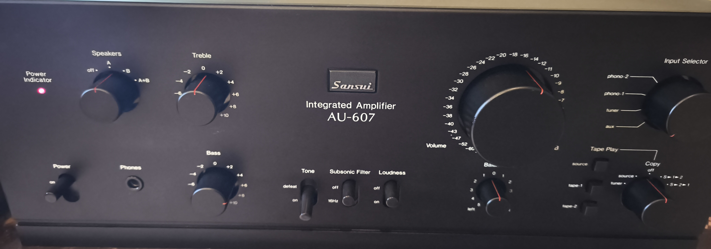
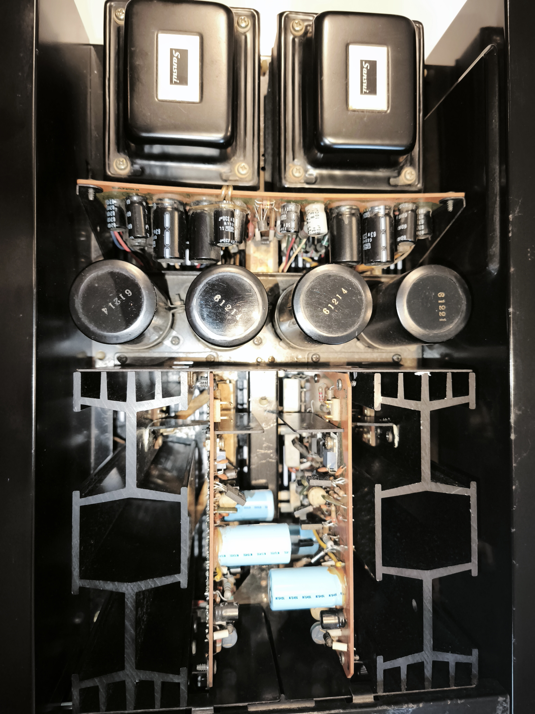
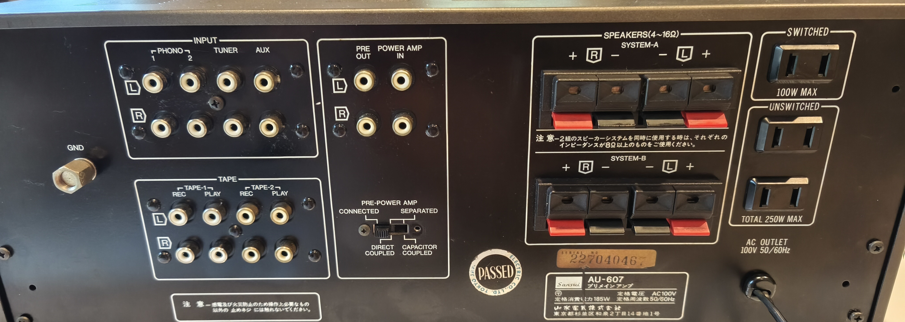

Sansui · Hi-Fi Stereo
SANSUI

AU‑607 · Front panel, as restoredAU‑607
DC Pre‑Main Amplifier
Every correction feedback would have to make —
made unnecessary first.
made unnecessary first.

AU‑607 · Front panel, as restoredPush a fast, dense music signal through most amplifiers and the spec sheet still looks fine — until you actually listen. The AU-607 starts from a different question: what if the circuit didn't need heavy correction in the first place?
Conventional designs lean on large open-loop gain and heavy negative feedback (NF) to keep distortion in check. The trouble is timing: any delay in the circuit means the feedback signal arrives an instant late, and for that instant the correction loop loses its grip. An overload hits the summing junction, and transient intermodulation distortion (TIM) appears — smearing resolution exactly when the music is at its most demanding. It's a large part of why wide-range playback proved so difficult for earlier amplifiers.
Sansui's engineers began with the AU-607's bare characteristics — how the circuit behaves before any feedback is applied — and worked outward: wider frequency response, tighter phase behaviour, lower distortion at the source. A dedicated phase-correction network, tuned to a precise stagger ratio between phase advance and phase delay, holds phase accuracy to several tens of megahertz. Because the raw circuit already behaves, only the minimum necessary feedback is needed — and TIM distortion falls accordingly, extending clean response into both the extreme low and extreme high frequencies.
The output stage runs as a true DC amplifier. A newly developed dual FET, matched for identical characteristics, leads the first stage — handling roughly four times the current of a conventional FET. That headroom lifts slew rate and stops TIM distortion from forming at the summing point. The second stage is a differential, two-stage design built around low-noise transistors, a current-mirror circuit, and a cascode connection; current-differential operation from its single-ended output feeds a push-pull pre-drive stage, cancelling second-harmonic distortion and staying stable against temperature and supply fluctuation. Its transistors were selected for particularly low output conductance, with series emitter resistors added to protect linearity. The output stage itself uses a three-stage Darlington configuration for low output impedance and low distortion, with output transistors chosen for clean high-frequency and pulse response. DC drift — usually the tradeoff of going DC-coupled — is controlled through tightly regulated supply rails and a carefully matched summing point, so the AU-607 gets the benefits of DC coupling without the usual instability.
The equalizer stage uses eight transistors — a differential first stage with its own current source, a class-A buffer stage, and a pure-complementary SEPP output — with low-noise transistors specifically selected for the differential input. A current-source circuit lifts CMRR at the summing point, tightening dynamic performance across a wide band (10Hz–100kHz). High-precision metal-film resistors and low-tolerance capacitors hold RIAA accuracy to within ±0.2dB, backed by regulated high-voltage supply rails for dynamic margin. The tone section uses click-detented controls for a tactile, repeatable feel, plus a tone-defeat switch that removes the tone circuit entirely for a flat, unaltered signal path. A built-in subsonic filter clears unwanted ultra-low-frequency noise before it reaches the power amp.

Twin transformers & 12,000μF×4 supplyTwo separate transformers keep left and right channels fully independent, preventing crosstalk and improving regulation. Reservoir capacitance is generous — 12,000μF × 4 — and metallized-film capacitors paired with regulated supply circuits keep internal impedance low, where much of a sound's articulation and body are won or lost. An ASO current limiter and a DC-fault detector on the output terminals protect the amplifier without getting in the way.
Volume is a 32-step detented control using a two-row design that minimises left/right tracking error. The preamp and DC power amp sections separate cleanly — the power amp works on its own, with a choice of DC or AC input — and two tape decks can run independently, so an air-check and a tape-to-tape copy can happen at the same time. Round it out with a loudness contour, centre-detented balance, a headphone jack, a chassis earth terminal, and spare AC outlets. A rack-mount adapter (BX-7) was available separately.

Rear panel · Inputs, tape loops & speaker terminalsOptional: Rack Mount Adapter BX-7 — ¥3,000, sold separately.